Toca la pantalla o presiona la flecha para comenzar la presentación.
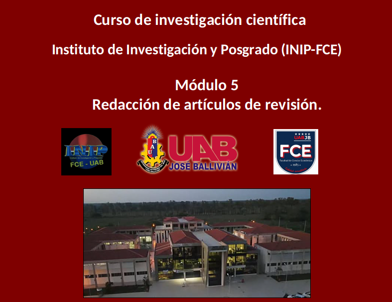
>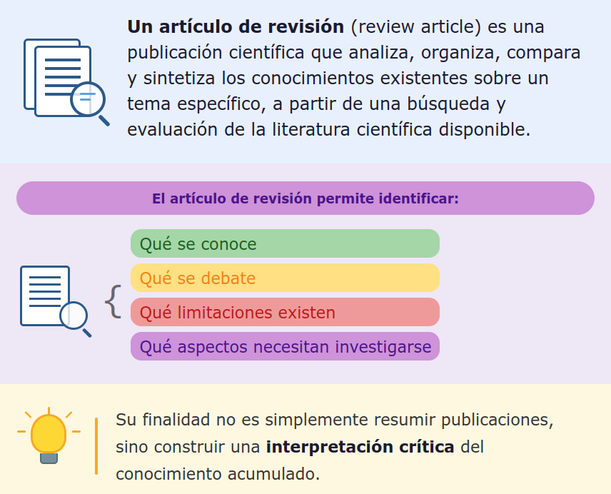
* Sintetizar el conocimiento y reunir los principales hallazgos de investigaciones dispersas.
* Comparar resultados e identificar coincidencias, contradicciones y diferencias entre estudios.
* Evaluar la evidencia y analizar la solidez de los métodos, los datos y las conclusiones de las investigaciones.
* Identificar vacíos de conocimiento y reconocer preguntas que todavía no tienen respuestas suficientes
* Orientar nuevas investigaciones y proponer hipótesis, preguntas y líneas de investigación futuras.
* Apoyar la toma de decisiones al aportar evidencia organizada para el diseño de políticas públicas, estrategias empresariales o intervenciones sociales y ambientales.
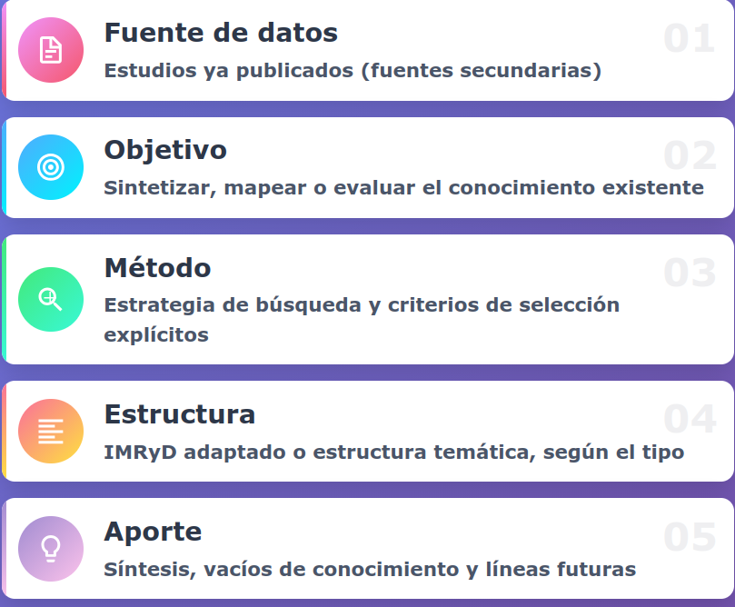
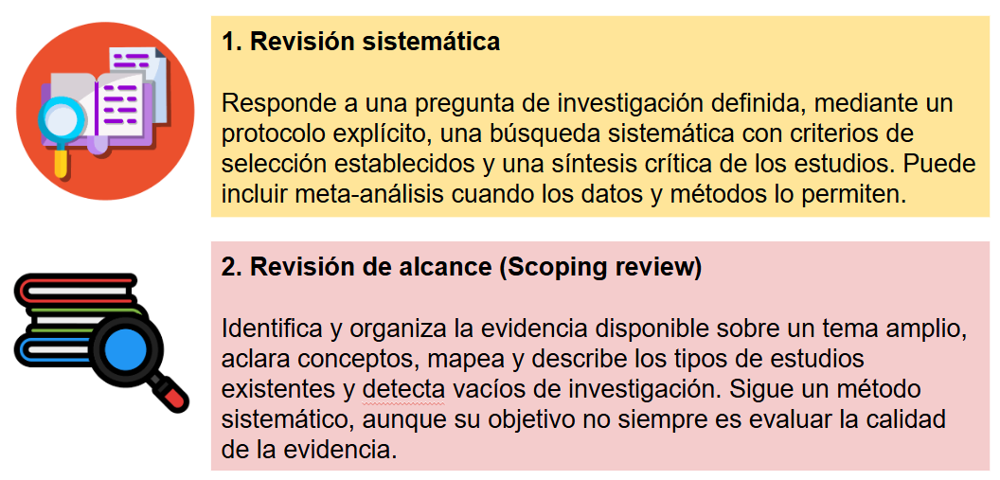
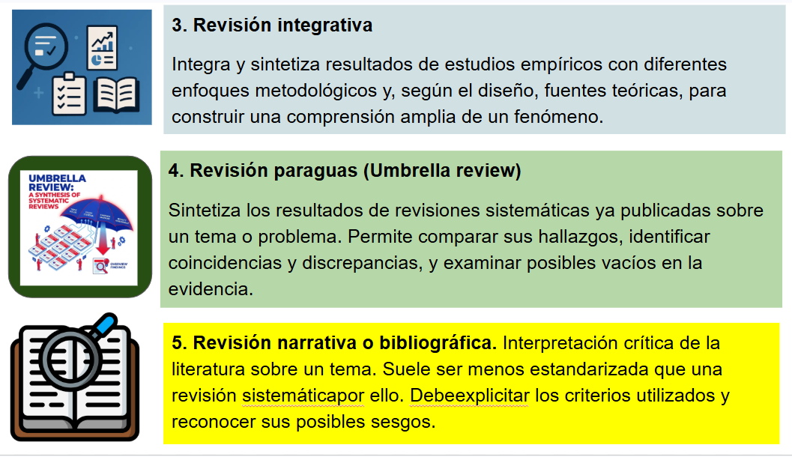
Tema: Efectos de las prácticas de gestión de recursos humanos sobre el desempeño de las pequeñas y medianas empresas en el Departamento del Beni.
Pregunta de investigación: ¿Qué efectos tienen las prácticas de gestión de recursos humanos —capacitación, evaluación del desempeño, incentivos y selección de personal— sobre el desempeño financiero y operativo de las pequeñas y medianas empresas en el Beni?
Para llevar a cabo esta revisión sistemática, el investigador debe buscar estudios empíricos que analicen prácticas de recursos humanos y resultados empresariales en PyMES del Beni, consultando en diversas bases de datos de artículos científicos y otras fuentes confiables y seleccionando los más relevantes.
Los estudios seleccionados deben evaluarse en forma crítica, clasificando los resultados y sintetizando los hallazgos, tomando como variables de interés la productividad, rentabilidad, crecimiento de ventas, innovación y desempeño operativo.
Una vez terminada, la revisión permitirá identificar las prácticas asociadas con mejores resultados, la consistencia de la evidencia y las limitaciones de los estudios disponibles.
La revisión de alcance es una síntesis exploratoria que busca identificar y mapear sistemáticamente la amplitud de la evidencia disponible sobre un tema, campo, concepto o problema en particular.
Por tratarse de una revisión exploratoria, no llega a estimar efectos entre variables ni relaciones de causa y efecto, pero permite saber el estado del arte del tema que nos interesa, lo que se ha investigado en diversos contextos, los diferentes conceptos, tendencias, metodologías y debates vigentes, además de detectar vacíos de investigación .
La calidad de una revisión de alcance depende de la información consultada y del cumplimiento de directrices y estándares metodológicos rigurosos para llevar a cabo la investigación y reportar los resultados, asegurando la transparencia, la reproducibilidad y la coherencia entre la pregunta de investigación, los objetivos, métodos y resultados.
Para la investigación se recomienda aplicar las directrices metodológicas de Instituto Joanna Briggs (JBI) y para el reporte se deben cumplir el estándar PRISMA-ScR para revisiones de alcance.
El protocolo de investigación permite planificar todos los pasos de la revisión de alcance. Un elemento fundamental del protocolo es el marco Población, Concepto y Contexto (PCC), que ayuda a formular la pregunta de investigación y establecer sus objetivos. A continuación presentamos un ejemplo de protocolo aplicado a la Administración de Empresas.
Identificación del problema: La transformación digital es un imperativo estratégico para las MIPYMES, que generan la mayor parte del empleo en América Latina. Sin embargo, la evidencia científica sobre la adopción de tecnologías digitales, las capacidades organizacionales, las barreras de adopción y las estrategias de gestión se encuentra dispersa y fragmentada y no permite orientar las políticas públicas de digitalización de las MIPYMES en la región. Es recomendable realizar una revisión de alcance.
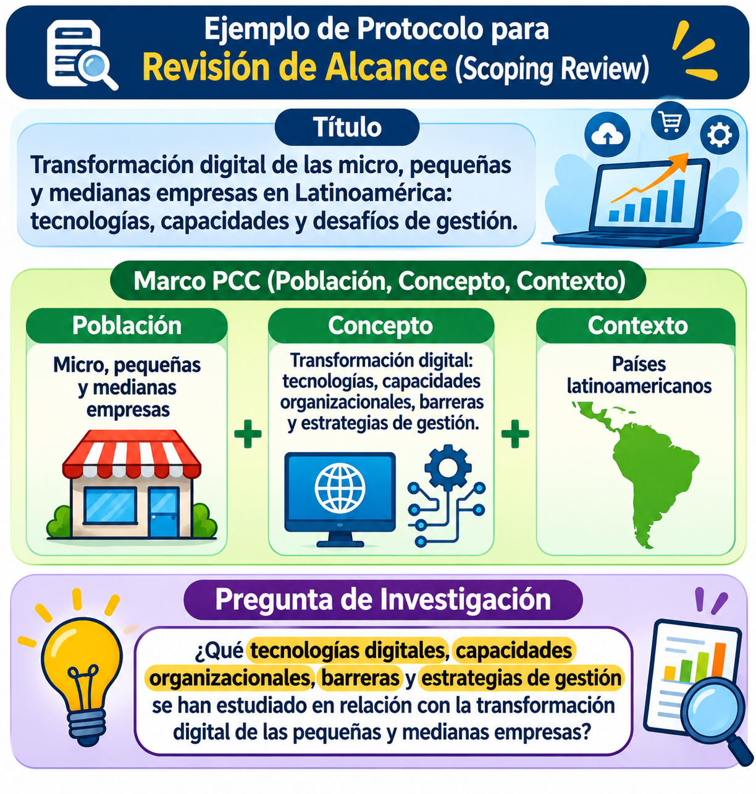
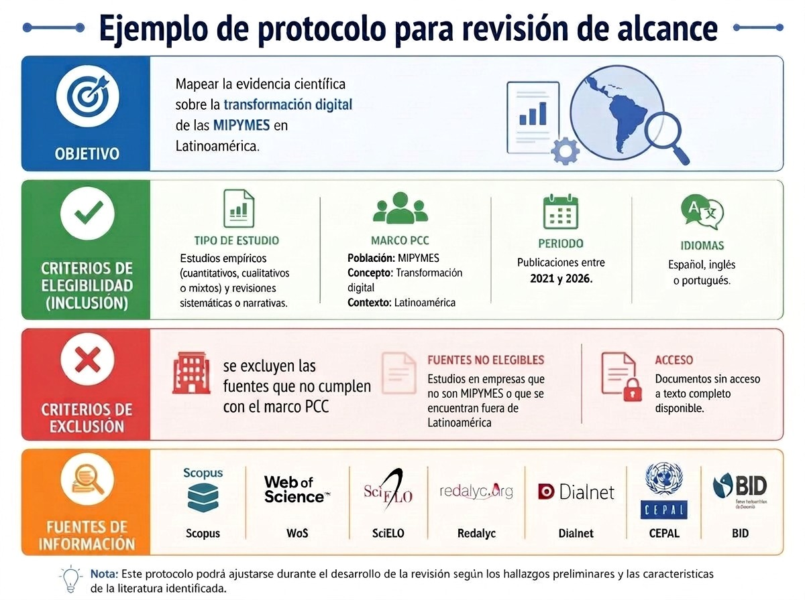
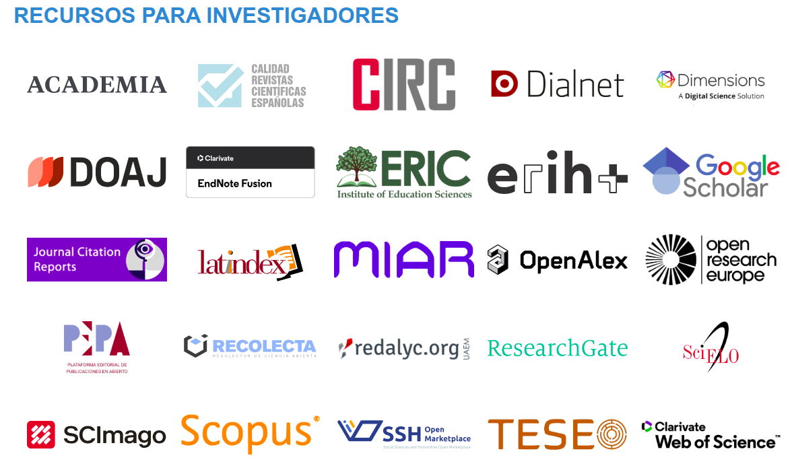
Bases bibliográficas multidisciplinarias:
Scopus, Web of Science (WoS), Dimensions, OpenAlex DOAJ, CORE, SciELO, Redalyc, Dialnet, Google Scholar.
Bases bibliográficas especializadas en Economía, Administración, Contabilidad: EconLit, RePEc, Business Source Complete, ABI/INFORM Collection, Emerald Insight.
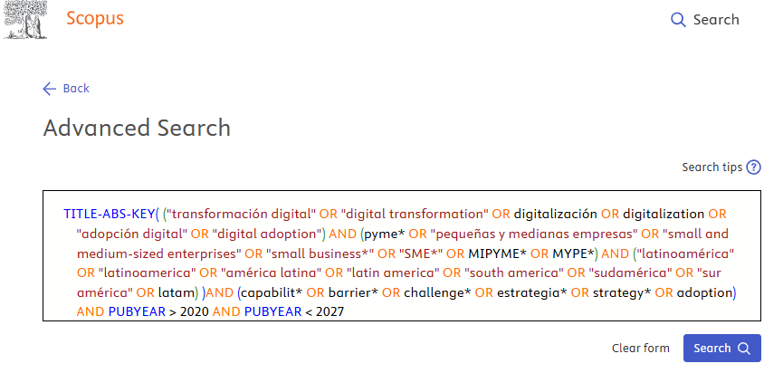
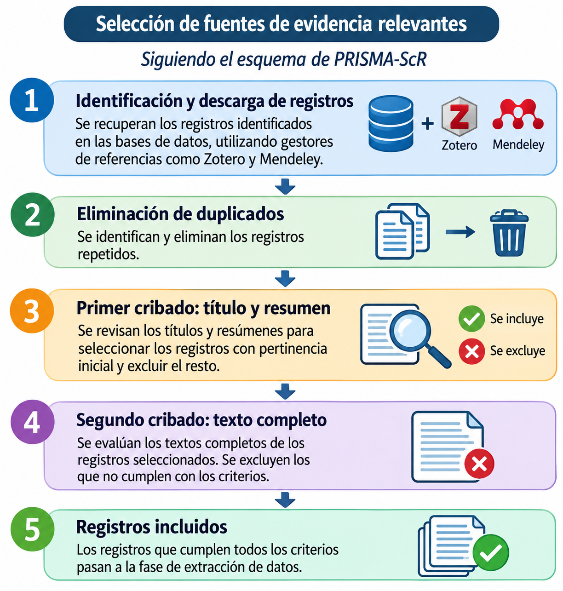
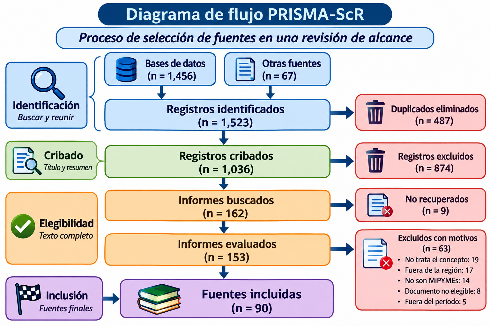